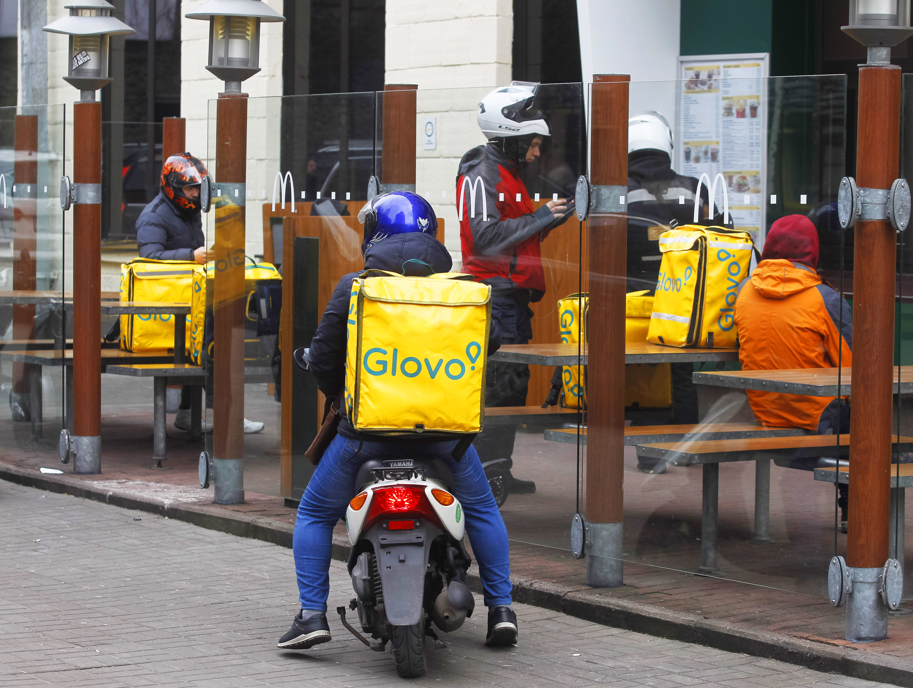

Вывезти бигмак. McDonaldʼs вернулся, но заказать доставку стало вызовом. Как это повлияет на Glovo и рынок быстрой доставки
После почти семи месяцев McDonald's возобновил работу трех ресторанов. Заказать еду через теперь единственного партнера по доставке, Glovo, мало кому удалось. В прошлом году McDonald's приносил до половины всех заказов сервисам доставки Glovo и Rocket. Как испанская служба доставки справилась с ажиотажем первого дня и оживит ли возвращение McDonald's рынок доставки.
«Доставлю Вам еду из ресторана McDonaldʼs с левого берега». Услуга обойдется по цене около двух бигмаков – 200 грн и дополнительно 18 грн за каждый километр от «Мака» до адреса. Тариф по области на 7 грн дороже» – объявление курьера-любителя на OLX.
McDonaldʼs открыл всего три ресторана на левом берегу на доставку через единственного партнера, Glovo, в 9:00 20 сентября. В зоне доставки радиусом 3 км от каждой локации находятся около 350 000 киевлян, по подсчетам Forbes. Расширить покрытие пытались курьеры-любители объявлением на OLX (на момент публикации объявление удалили).
Даже коренным жителям левого берега сделать заказ из McDonaldʼs оказалось непросто, то курьеров не хватало, то McDonaldʼs исчезал из приложения из-за нехватки продуктов, говорят в пресс-службе Glovo. За первое время работы «Мака» Glovo получил заказов от левобережцев на 442% больше, чем днем ранее (абсолютные цифры Glovo называть отказался).
«Рано делать выводы об общем количестве заказов, но можем утверждать, что спрос на продукцию McDonaldʼs превысил ожидания», – комментирует пресс-служба Glovo. Почему возвращение легенды важно для Glovo, рынка доставки и всей Украины?
Как Glovo готовился к McDonaldʼs
«Мы запустили столько городов и сетей ресторанов, столько раз перезапускались, что все процессы достаточно настроены», – рассказывает генеральный менеджер Glovo в Восточной Европе и Центральной Азии Дмитрий Расновский в преддверии старта McDonaldʼs. Локации выбирала сеть ресторанов. Радиус доставки согласовывали вместе, чтобы еду доставляли, соблюдая температурный режим.
Конкретное количество курьеров под одно заведение Glovo не назначает. Алгоритмы распределяют их автоматически, чтобы обеспечить оптимальное время доставки. Довоенный золотой стандарт – до 25 минут, рассказывает бывший менеджер Glovo, попросивший не упоминать его имени. Если из-за плохой погоды не хватало курьеров или ресторан не справлялся со спросом, радиус сокращали.

«Много заказов, немного курьеров, уменьшается зона покрытия, чтобы можно было урезать физическое количество заказов, но точно их доставить, – объясняет логику он. – Все захотят заказать Мак, но не смогут и будут разочарованы», – говорил накануне экс-работник Glovo. В день старта курьеры закончились уже через 20 минут. В апреле у Glovo из 10 000 курьеров осталось две трети – 3700.
«Есть ажиотаж и повышение цен. Очень много пазлов в общей мозаике, поэтому сложно предположить, что будет, – рассказывал Расновский. – Точно возрастет количество курьеров и транзакций». Спрос оказался больше, чем ожидалось, комментируют в пресс-службе Glovo. Утром 20 сентября на левом берегу курьеров было втрое больше обычного добавляют в пресс-службе (точное количество активных курьеров компания отказалась называть).
Со временем закончились и продукты в McDonaldʼs. Для части пользователей заказ был недоступен в конкретном ресторане или в приложении.
«Пара-па-па-пам». Сервисы доставки это любят!
McDonaldʼs – привилегированный партнер Glovo. В 2021 году в некоторые месяцы сеть генерировала едва ли не столько заказов, сколько другие рестораны вместе взятые, рассказывает на правах анонимности экс-работник сервиса. «Это динамический показатель от недели к неделе. Он зависит и от акций: если есть скидка на бигмак, продажи зашкаливают», – говорит он.
В прошлом году McDonaldʼs вместе с Glovo разделял украинский Rocket. Для последнего сеть также являлась крупнейшим партнером. Еще в начале февраля у Rocket были проблемы с финансированием из-за ареста первого инвестора Тимура Рохлина. Полномасштабная война окончательно закрыла стартап.
В прошлом году на доставку приходилось до 30% заказов McDonaldʼs, говорит собеседник Forbes. Из крупнейших игроков на рынке он не работал лишь с эстонским Bolt Food. По информации Forbes из двух источников, он также вел переговоры с McDonaldʼs.
Одна из причин, почему ресторан не появился в приложении Bolt, – техническая интеграция с системами McDonaldʼs. Без нее работники ресторана должны вручную перебивать каждый заказ с планшета сервиса доставки на кассу. В Glovo в 2021-м интеграция уже работала, в Rocket ее внедряли. «Со вторым партнером без интеграции McDonaldʼs было бы сложно», – рассказывает экс-работник Glovo. Теперь Bolt не нужно ждать, пока украинский сервис завершит интеграцию.
Цифры первого дня
- Загрузка приложения Glovo возросла на 120% по сравнению с 19 сентября
- Самый дорогой заказ – 6320 грн (23 Дабл Чизбургер Меню, 6 БигМак Меню, 5 пачек нагетсов, 10 МакПирогов, 14 соусов)
- Моє замовлення даблчіз та кава
Пара фактов
- Самый маленький заказ – 89 грн (МакЧикен)
- Средний чек – 611 грн
- Первый заказ в 9:01 – БигМак Меню, доставленный за 16 минут
- Последний заказ в 20:00 – 3 пачки нагетсов, средний картофель, БигМак, БигМак Меню, БигТейсти Меню, МакПирог, 5 соусов
С падением украинского Rocket фигуры на доске поменялись. Glovo заявляет, что у него 80% рынка. Основной конкурент – собственные доставки ресторанов и Bolt Food. «Во многих странах Bolt Food уже сотрудничает с сетью McDonaldʼs. «Украина для нас очень важный рынок, поэтому мы также открыты и будем рады сотрудничеству с брендом McDonaldʼs», – говорит Иван Гринчук, руководитель направления доставки еды Bolt Food в Украине.
Сотрудничество с McDonaldʼs выгодно для сервисов доставки. Это предполагаемый партнер, говорит экс-работник Glovo. «Сеть имеет высокую лояльность пользователей, обширное географическое покрытие и практически стабильное количество заказов неделя к неделе», – перечисляет преимущества он. Комиссия для McDonaldʼs была значительно ниже, чем для небольших ресторанов, но они давали большой объем заказов и приводили аудиторию в приложение.
Почему McDonaldʼs нужен Украине
Возвращение McDonaldʼs сразу лишь на доставку привлекло еще больше внимания к сервисам доставки, говорит Гринчук. «До полномасштабной войны фастфуд мог составлять около половины доставок, поэтому возвращение крупнейшего игрока даст дополнительный приток клиентов и заказов», – подтверждает Игорь Шрамко, бывший региональный менеджер Bolt Food в Украине.
Но до возвращения на довоенные объемы рынка много работы, добавляет он. Потрудиться придется и McDonaldʼs – для открытия заведений, и платформам по доставке – для увеличения количества курьеров. «Количество транзакций на левом берегу Киева вырастет ощутимо, но более важно, чтобы этот тренд продолжался и «Мак» открыл потихоньку все остальное», – говорит Расновский. Glovo на довоенные объемы планирует выйти в январе – феврале 2023 года, «даже если McDonaldʼs не будет открывать остальные заведения».
Bolt Food в некоторых городах уже восстановился до довоенных показателей, говорит Гринчук. В начале большой войны количество заказов на платформе Bolt Food сократилось до нескольких процентов от довоенного количества. За три месяца объемы должны достичь 50% мирных времен.
Киев восстановился уже на 100%. Во Львове количество заказов выросло на 30% от довоенных показателей, в Днепре – на 20%. Серой зоной восстановления остается Харьков. «Мы продолжаем там работать, но количество заказов значительно меньше по сравнению с довоенным», – говорит Гринчук.
Работу в Харькове возобновил и Glovo. «Для нас это была важная гражданская позиция. Если ВСУ продолжит прогресс и уровень безопасности увеличится, то Харьков будет восстанавливаться», – говорит Расновский.
Возвращение McDonaldʼs – сигнал для международных компаний. «Когда крупный международный игрок возобновляет операции в стране, которая находится в состоянии войны, это знак для других колеблющихся бизнесов инвестировать ли в Украину сейчас», – говорит Расновский.
McDonaldʼs почти семь месяцев ссылался на протоколы безопасности и угрозу ракетных обстрелов. Его конкурент – KFC – возобновил работу еще весной. В октябре McDonaldʼs откроет для посетителей залы, экспресс-окна и МакДрайв, а также семь заведений на правом берегу Киева. «Мы еще на один шаг ближе к тому, где мы были», – заключает Расновский.
На главную